CruiseÖnceki dönem
CruiseÖnceki dönemCruise Gemisi ile Marmaris - Bodrum - Kaş - İskenderiye
Marmaris, Bodrum, Kaş, İskenderiye
Güncel tarih ve fiyatiçin arayın
İncele →Umre, Fas, Mısır, Avrupa, Asya ve daha fazlası. Tur kartına tıklayın, programı inceleyin, talebinizi bırakın.
CruiseÖnceki dönem CruiseÖnceki dönem
CruiseÖnceki dönem CruiseÖnceki dönem
CruiseÖnceki dönem CruiseÖnceki dönem
CruiseÖnceki dönem CruiseÖnceki dönem
CruiseÖnceki dönem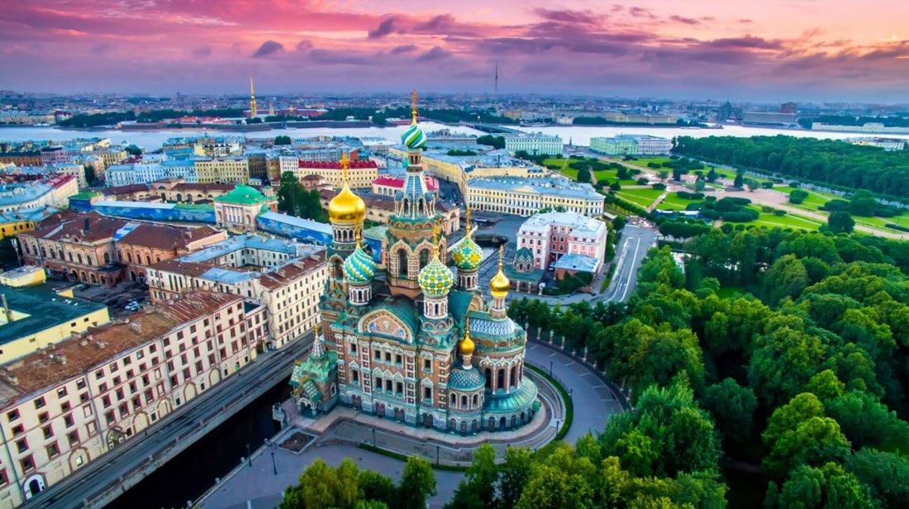
RusyaÖnceki dönem CruiseÖnceki dönem
CruiseÖnceki dönem CruiseÖnceki dönem
CruiseÖnceki dönem CruiseÖnceki dönem
CruiseÖnceki dönem CruiseÖnceki dönem
CruiseÖnceki dönem Orta DoğuÖnceki dönem
Orta DoğuÖnceki dönem MısırÖnceki dönem
MısırÖnceki dönem MısırÖnceki dönem
MısırÖnceki dönem Orta DoğuÖnceki dönem
Orta DoğuÖnceki dönem MısırÖnceki dönem
MısırÖnceki dönem Orta ve Uzak AsyaÖnceki dönem
Orta ve Uzak AsyaÖnceki dönem 5 Yıldızlı Umre TurlarıÖnceki dönem
5 Yıldızlı Umre TurlarıÖnceki dönem Ekonomik Umre TurlarıÖnceki dönem
Ekonomik Umre TurlarıÖnceki dönem Ekonomik Umre TurlarıÖnceki dönem
Ekonomik Umre TurlarıÖnceki dönem Orta DoğuÖnceki dönem
Orta DoğuÖnceki dönem FasÖnceki dönem
FasÖnceki dönem MısırÖnceki dönem
MısırÖnceki dönem Orta ve Uzak AsyaÖnceki dönem
Orta ve Uzak AsyaÖnceki dönem Orta ve Uzak AsyaÖnceki dönem
Orta ve Uzak AsyaÖnceki dönem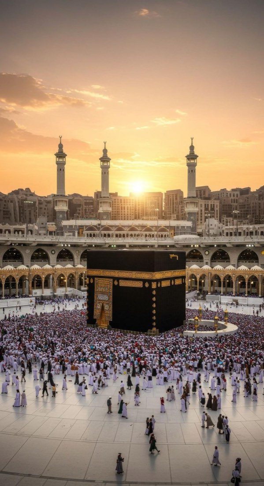
5 Yıldızlı Umre TurlarıÖnceki dönem Ekonomik Umre TurlarıÖnceki dönem
Ekonomik Umre TurlarıÖnceki dönem 5 Yıldızlı Umre TurlarıÖnceki dönem
5 Yıldızlı Umre TurlarıÖnceki dönem Orta DoğuÖnceki dönem
Orta DoğuÖnceki dönem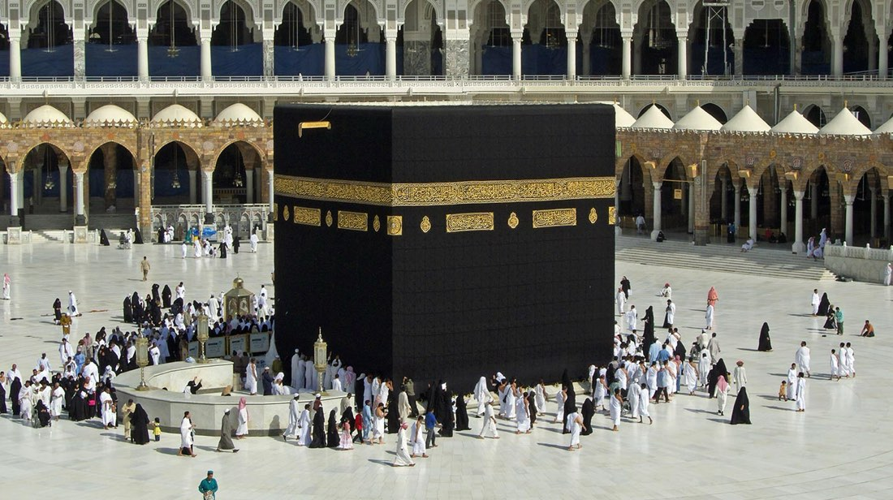
5 Yıldızlı Umre TurlarıÖnceki dönem FasÖnceki dönem
FasÖnceki dönem MısırÖnceki dönem
MısırÖnceki dönem Ekonomik Umre TurlarıÖnceki dönem
Ekonomik Umre TurlarıÖnceki dönem Ekonomik Umre TurlarıÖnceki dönem
Ekonomik Umre TurlarıÖnceki dönem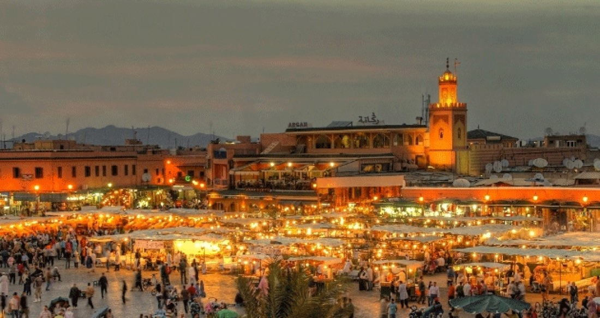
FasÖnceki dönem Ekonomik Umre TurlarıÖnceki dönem
Ekonomik Umre TurlarıÖnceki dönem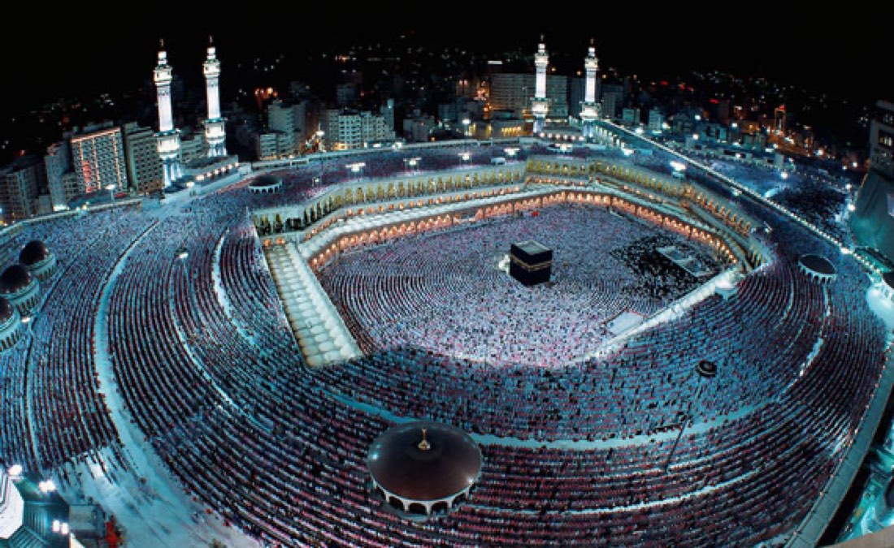
Ekonomik Umre TurlarıÖnceki dönem Ekonomik Umre TurlarıÖnceki dönem
Ekonomik Umre TurlarıÖnceki dönem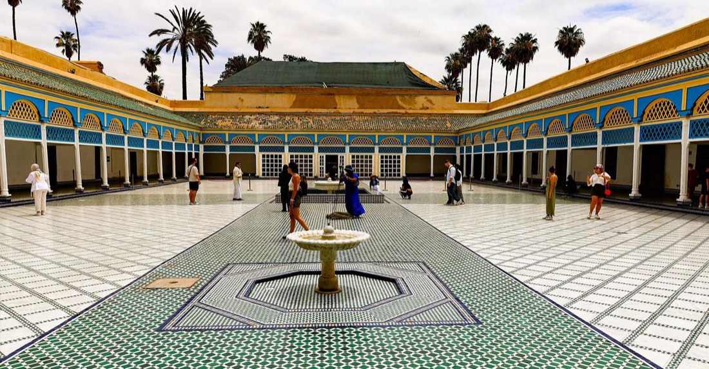
FasÖnceki dönem Orta DoğuÖnceki dönem
Orta DoğuÖnceki dönem Orta ve Uzak AsyaÖnceki dönem
Orta ve Uzak AsyaÖnceki dönem Orta ve Uzak AsyaÖnceki dönem
Orta ve Uzak AsyaÖnceki dönem Yurtiçi TurlarÖnceki dönem
Yurtiçi TurlarÖnceki dönem Ekonomik Umre TurlarıÖnceki dönem
Ekonomik Umre TurlarıÖnceki dönem Yürüme Mesafeli Umre TurlarıÖnceki dönem
Yürüme Mesafeli Umre TurlarıÖnceki dönem MısırÖnceki dönem
MısırÖnceki dönem RusyaÖnceki dönem
RusyaÖnceki dönem 5 Yıldızlı Umre TurlarıÖnceki dönem
5 Yıldızlı Umre TurlarıÖnceki dönem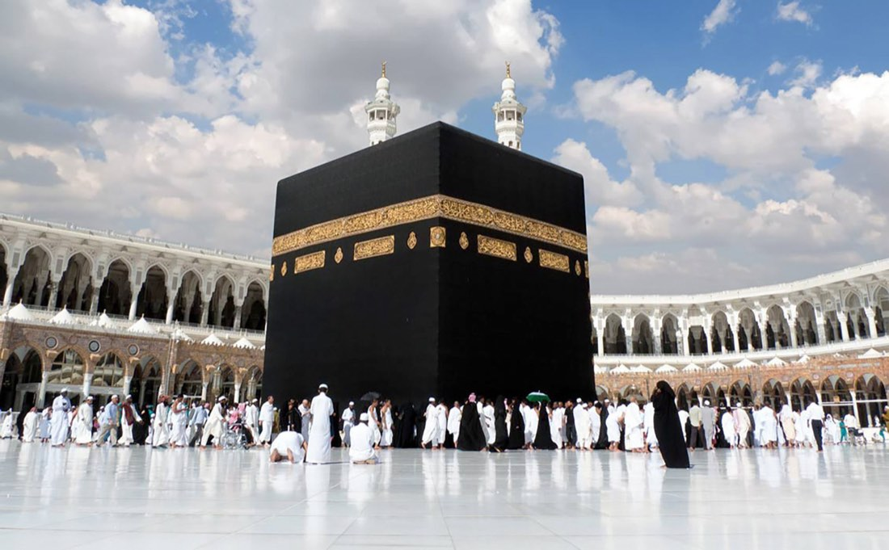
5 Yıldızlı Umre TurlarıÖnceki dönem 5 Yıldızlı Umre TurlarıÖnceki dönem
5 Yıldızlı Umre TurlarıÖnceki dönem Orta DoğuÖnceki dönem
Orta DoğuÖnceki dönem Orta ve Uzak AsyaÖnceki dönem
Orta ve Uzak AsyaÖnceki dönem FasÖnceki dönem
FasÖnceki dönem AfrikaÖnceki dönem
AfrikaÖnceki dönem Yurtiçi TurlarÖnceki dönem
Yurtiçi TurlarÖnceki dönem FasÖnceki dönem
FasÖnceki dönem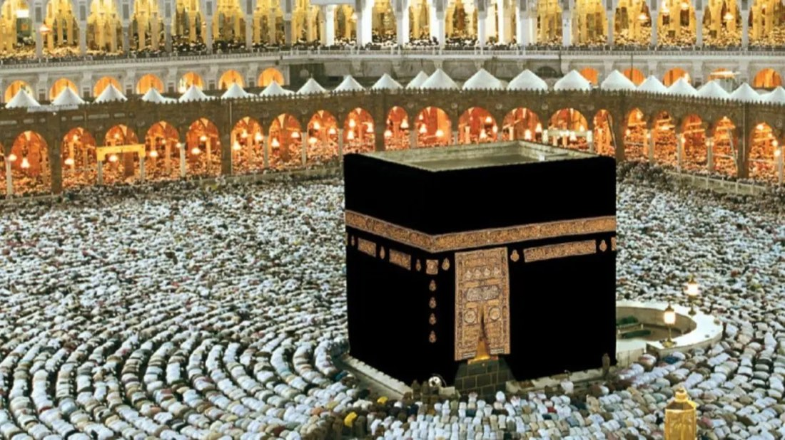
5 Yıldızlı Umre TurlarıÖnceki dönem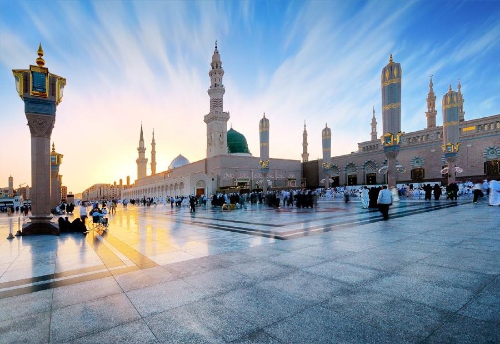
5 Yıldızlı Umre TurlarıÖnceki dönem Orta ve Uzak AsyaÖnceki dönem
Orta ve Uzak AsyaÖnceki dönem Orta ve Uzak AsyaÖnceki dönem
Orta ve Uzak AsyaÖnceki dönem Yurtiçi TurlarÖnceki dönem
Yurtiçi TurlarÖnceki dönem Orta ve Uzak AsyaÖnceki dönem
Orta ve Uzak AsyaÖnceki dönem AfrikaÖnceki dönem
AfrikaÖnceki dönem AfrikaÖnceki dönem
AfrikaÖnceki dönem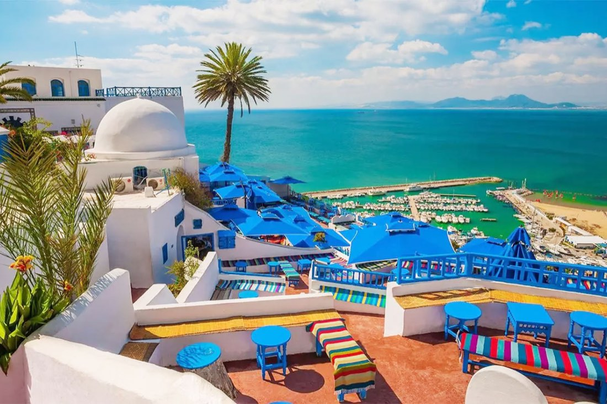
AfrikaÖnceki dönem AvrupaÖnceki dönem
AvrupaÖnceki dönem Orta ve Uzak AsyaÖnceki dönem
Orta ve Uzak AsyaÖnceki dönem FasÖnceki dönem
FasÖnceki dönem AfrikaÖnceki dönem
AfrikaÖnceki dönem Orta ve Uzak AsyaÖnceki dönem
Orta ve Uzak AsyaÖnceki dönem AvrupaÖnceki dönem
AvrupaÖnceki dönem FasÖnceki dönem
FasÖnceki dönem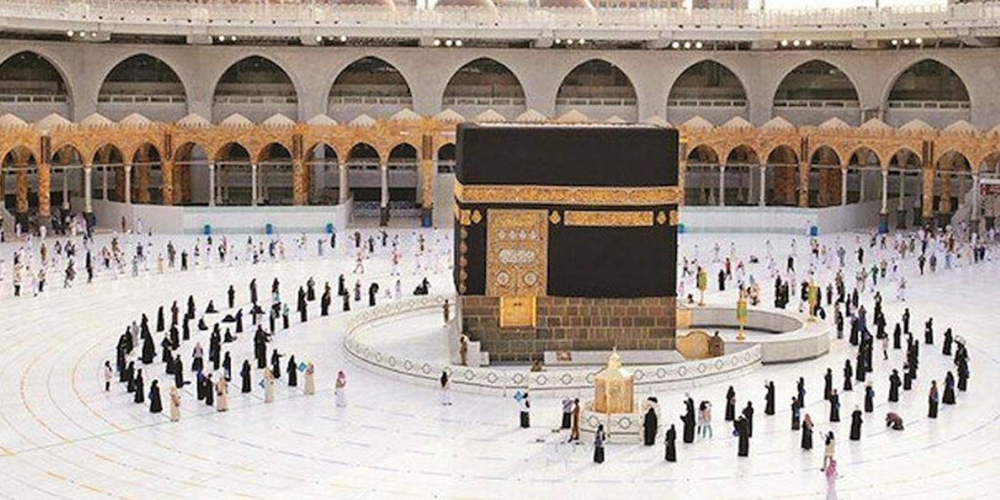
5 Yıldızlı Umre TurlarıÖnceki dönem 5 Yıldızlı Umre TurlarıÖnceki dönem
5 Yıldızlı Umre TurlarıÖnceki dönem FasÖnceki dönem
FasÖnceki dönem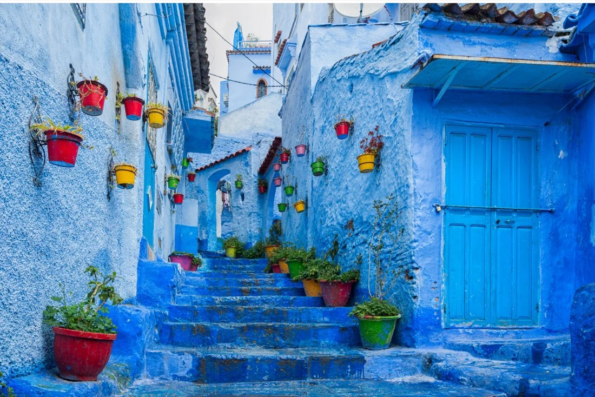
FasÖnceki dönem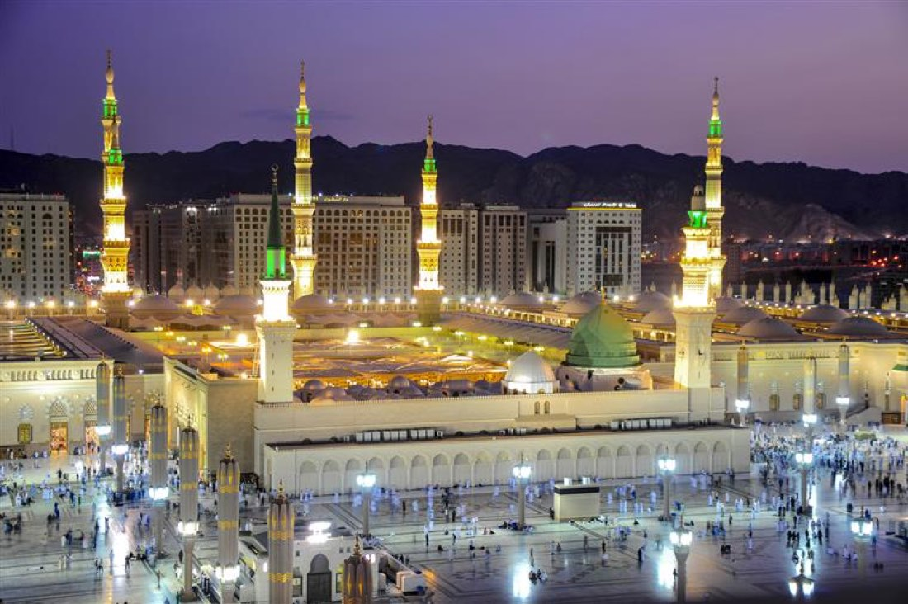
5 Yıldızlı Umre TurlarıÖnceki dönem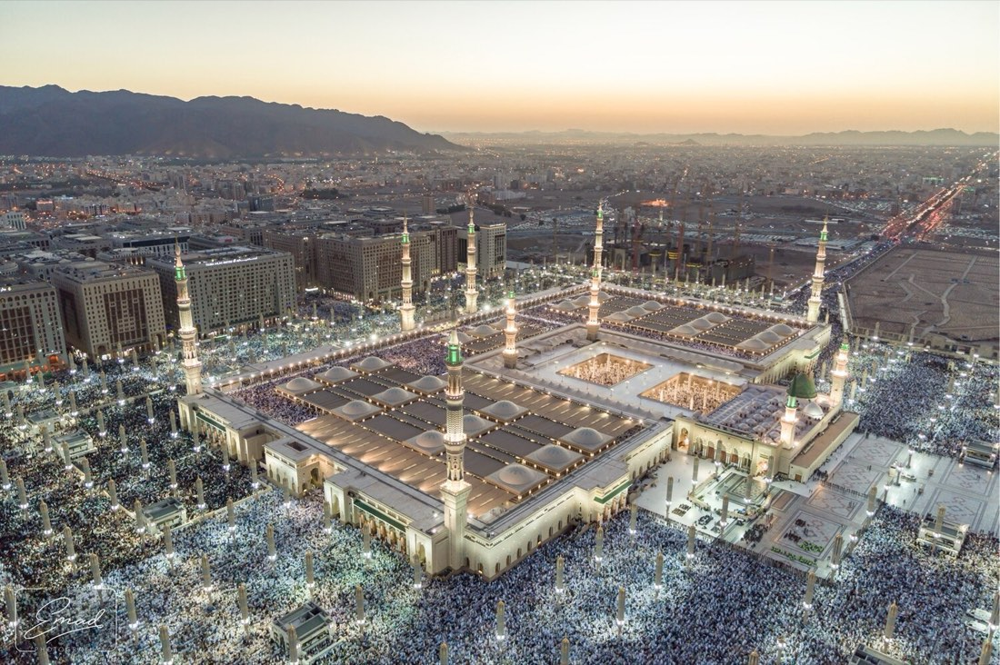
5 Yıldızlı Umre TurlarıÖnceki dönem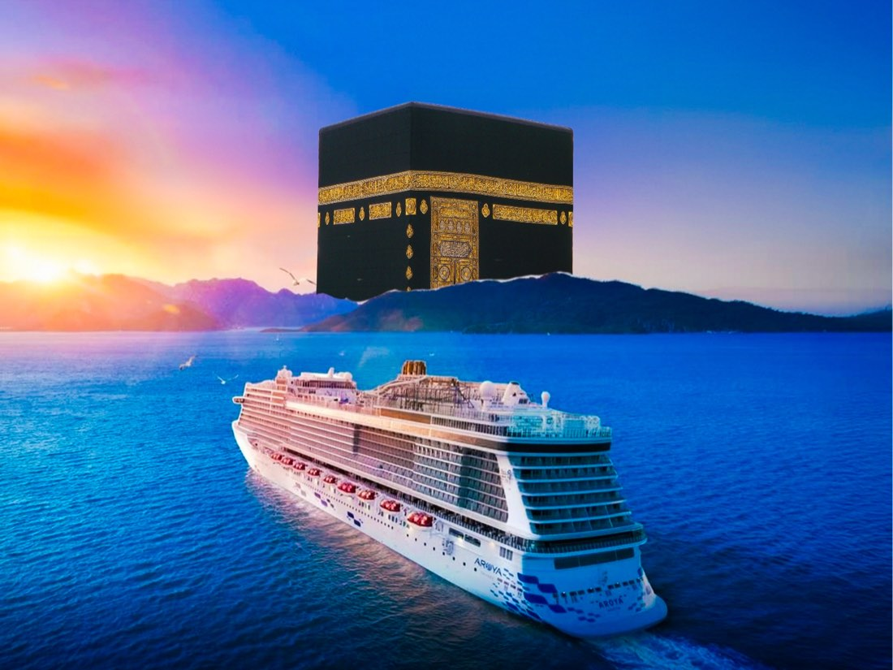
5 Yıldızlı Umre TurlarıÖnceki dönem AfrikaÖnceki dönem
AfrikaÖnceki dönem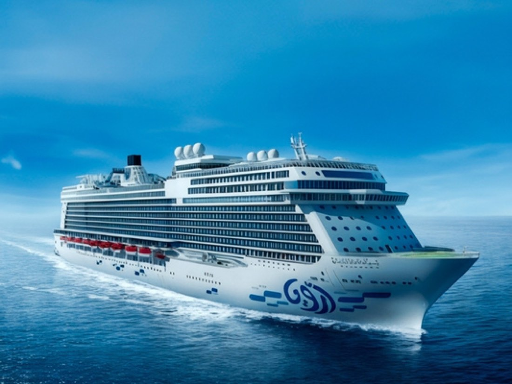
CruiseÖnceki dönem AvrupaÖnceki dönem
AvrupaÖnceki dönem AvrupaÖnceki dönem
AvrupaÖnceki dönem